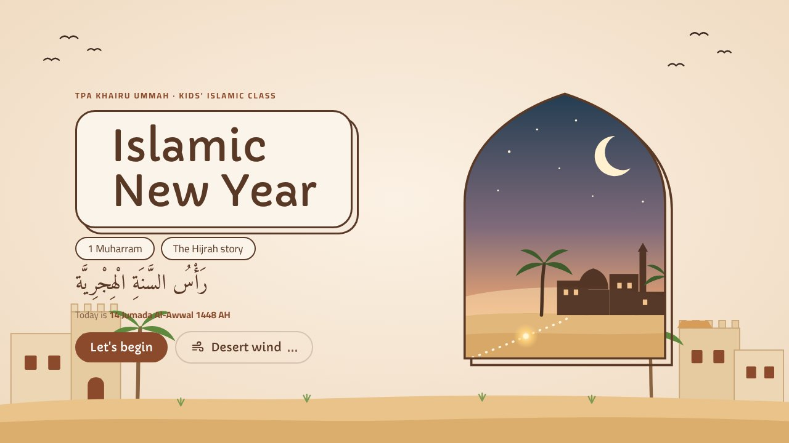
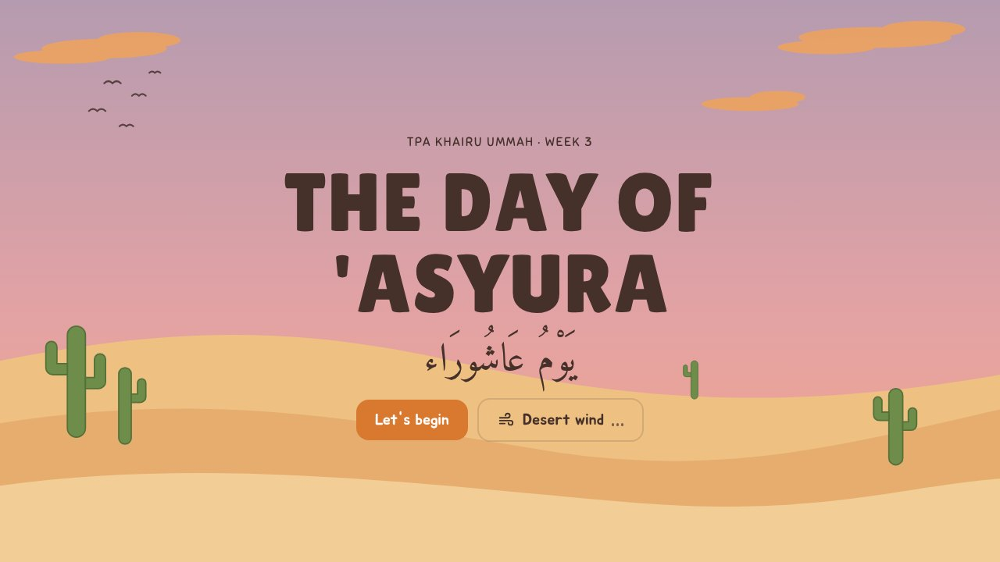
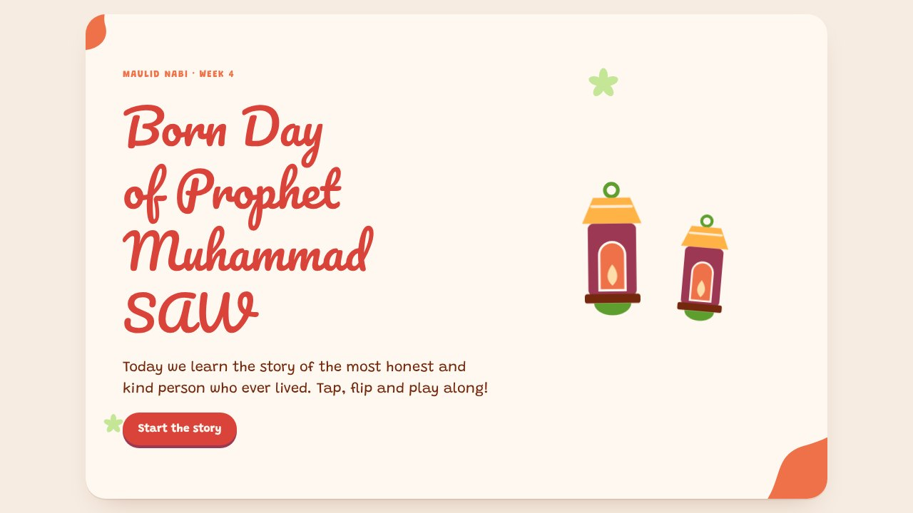
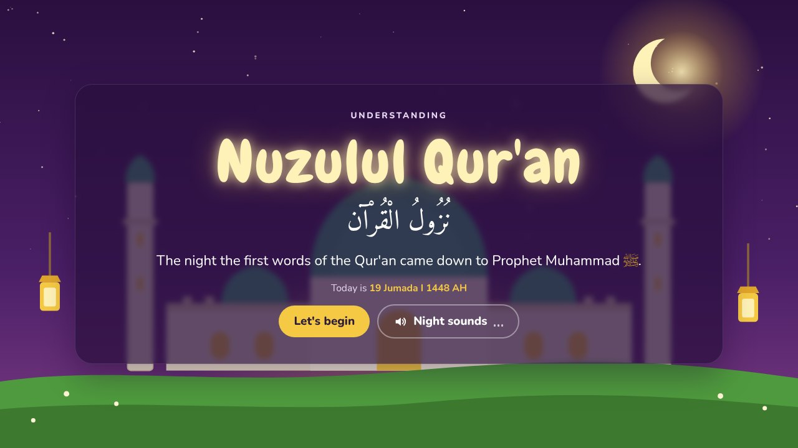

1 Muharram
Islamic New Year
The story of the Hijrah from Makkah to Madinah, the Cave of Thawr, and the 12 months of the Hijri calendar.
Open lessonLearn the special days of the Hijri year through stories, games and quizzes. Pick a lesson to start.

The story of the Hijrah from Makkah to Madinah, the Cave of Thawr, and the 12 months of the Hijri calendar.
Open lesson
How Allah saved Prophet Musa by splitting the sea, the four sacred months, and why we fast on 'Asyura.
Open lesson
The birth of Prophet Muhammad ﷺ in the Year of the Elephant, his childhood and family, his titles Al-Amin and As-Sadiq, and how we can follow him.
Open lessonIsra' Mi'raj: from Makkah to Masjid al-Aqsa, up through the seven heavens, and the gift of five daily prayers.
Open lesson
The night the first words of the Qur'an came down in the Cave of Hira, the meaning of "Iqra", Surah Al-'Alaq 1 to 5, and how we carry the light.
Open lessonEach lesson opens in its own tab. Press Full screen at the top of the lesson to show it on the projector.